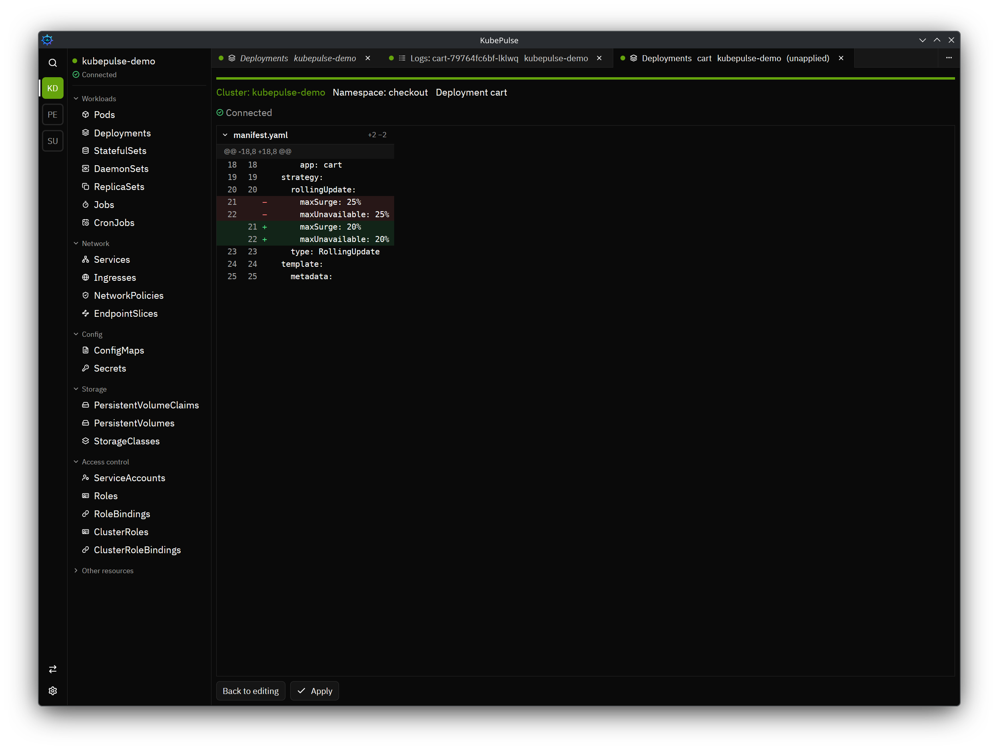
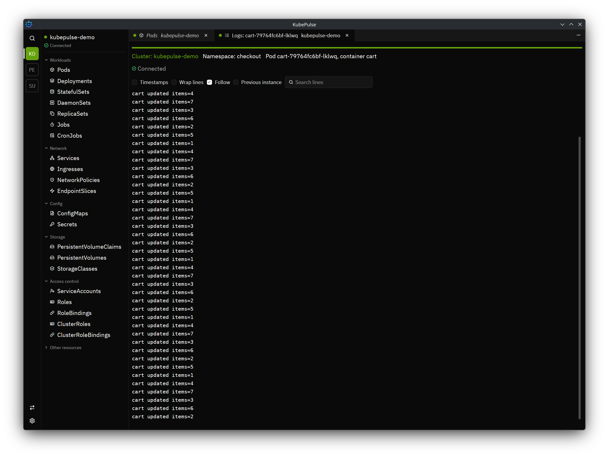
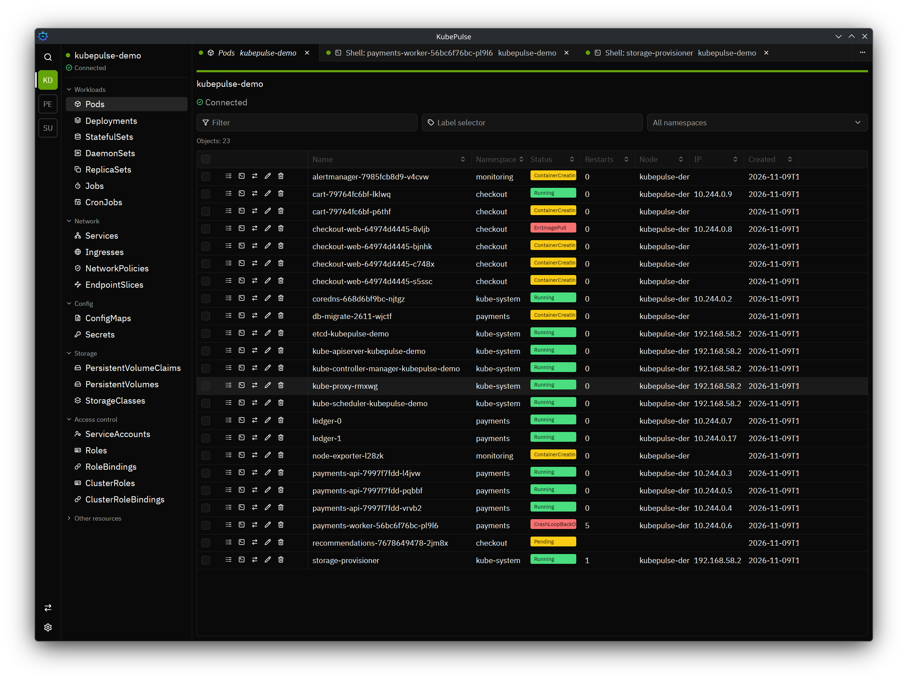
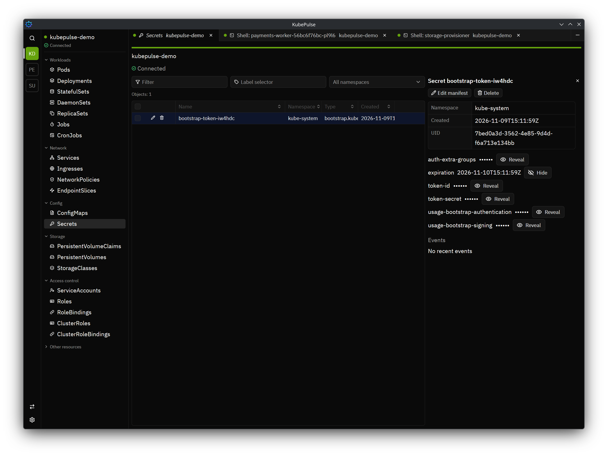
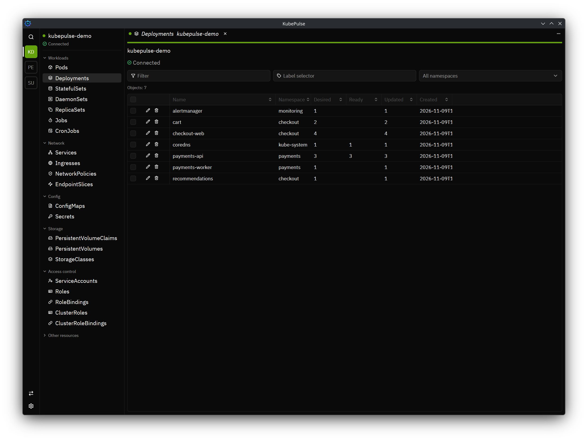

Screenshots
See it in action





Features
Everything you reach for, in one fast window
-
Your clusters, listed offline
Every context in your default kubeconfig shows up without touching the network. You decide when each cluster connects and disconnects.
-
Built for big clusters
Resource browsing designed for clusters with 10,000 pods each, so the table keeps up when your cluster grows.
-
Logs, shells, port forwards
Follow pod logs, open a shell in a container, and forward ports, all from the same window.
-
Edits you can trust
Every change runs as a dry run first and shows you a diff. Nothing reaches the cluster until you confirm.
-
Many clusters side by side
Open several clusters at once, each marked with its own identity color, so you always know where you are.
-
Keyboard first, extensible
A command palette, light and dark themes, and an extension system that the built-in features use too.
Safe changes
No surprise writes to production
Every change, including one from an extension, follows the same path. Deleting asks you to confirm the cluster, namespace, and object by name.
- 1Dry run
- 2Review the diff
- 3Confirm
- 4Apply
Open source
Yours to use, read, and change
KubePulse is open source under the Apache License, Version 2.0. It needs no account or license key and sends no telemetry. It never phones home.
Download
Get KubePulse
.debWayland and X11
macOSDisk image · .dmgDrag into Applications
WindowsInstaller · -setup.exeOne-click setup
Every release includes a SHA256SUMS file so you can verify your download.